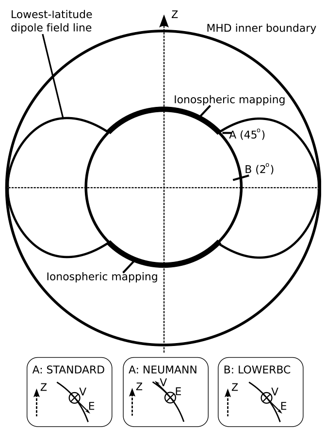

24 电离层
电离层类似于从中性气体到等离子体的过渡区。因此，从空间向下时，碰撞和动理学效应逐渐变得重要。小节 9.8 介绍了与电离层碰撞效应有关的一些基本物理知识。本章给出理解电离层电磁过程所需的数学描述。
24.1 电离层电动力学的推导
为了从第一性原理等离子体物理推导常用的电离层电动力学方程，我们从各粒子的精确含时多流体方程出发，系统地应用适当的准稳态近似 (Song 等 2001年; Vasyliūnas 2012年)。
24.1.1 基本等离子体方程和 Maxwell 方程
电磁场和等离子体的精确描述由 Maxwell 方程以及从各粒子种类 \(\alpha\)（电子 \(e\)、离子 \(i\) 和中性粒子 \(n\)）的动理学方程导出的速度矩方程支配。
Maxwell 方程：
- Faraday 定律： \[\frac{\partial \mathbf{B}}{\partial t} = -c\nabla \times \mathbf{E}\]
- Ampère 定律（包含位移电流）： \[\frac{\partial \mathbf{E}}{\partial t} = -4\pi \mathbf{J} + c\nabla \times \mathbf{B}\]
等离子体演化方程：
粒子种类 \(\alpha\) 的动量守恒方程为： \[ m_\alpha n_\alpha \frac{\partial \mathbf{v}_\alpha}{\partial t} + \nabla\cdot\pmb{\kappa}_\alpha - m_\alpha n_\alpha \mathbf{g} = n_\alpha q_\alpha\left( \mathbf{E} + \frac{1}{c}\mathbf{v}_\alpha \times \mathbf{B} \right) + \mathbf{R}_\alpha \tag{24.1}\] 其中 \(n_\alpha\) 是数密度，\(m_\alpha\) 是质量，\(\mathbf{v}_\alpha\) 是速度，\(q_\alpha\) 是电荷（\(q_i = e, q_e = -e\)），\(\pmb{\kappa}_\alpha\) 是动理学压力张量，\(\mathbf{g}\) 是重力加速度，\(\mathbf{R}_\alpha\) 表示碰撞动量传递。
24.1.2 多流体定义和演化方程
假设准中性（\(n_e \approx n_i = n\)），定义单流体等离子体变量：
- 等离子体质量密度： \(\rho = n m_i + n m_e \approx n m_i\)
- 等离子体整体速度： \(\mathbf{V} \approx \mathbf{v}_i + \frac{m_e}{m_i} \mathbf{v}_e\)
- 电流密度： \(\mathbf{J} = ne(\mathbf{v}_i - \mathbf{v}_e)\)
等离子体整体流动方程：
将离子和电子的动量方程相加，得到等离子体整体流动的演化方程。电磁力合并为洛伦兹力，碰撞项之和 \(\mathbf{R}_i + \mathbf{R}_e\) 表示来自中性背景的总阻力： \[ \frac{\partial}{\partial t}\left( \rho\mathbf{V} \right) + \nabla\cdot\pmb{\kappa} - \rho\mathbf{g} = \frac{1}{c}\mathbf{J}\times\mathbf{B} - n m_i \nu_{in}\left( \mathbf{V} - \mathbf{V}_n \right) \tag{24.2}\] 其中 \(\nu_{in}\) 是离子与中性粒子的碰撞频率，\(\mathbf{V}_n\) 是中性风速度。
广义欧姆定律（电流密度演化）：
将离子动量方程减去电子动量方程（按荷质比加权），得到电流密度的演化。在 \(m_e \ll m_i\) 的假设下，电子动力学占主导1，得到： \[ \frac{\partial \mathbf{J}}{\partial t} = \frac{ne^2}{m_e}\left( \mathbf{E} + \frac{1}{c}\mathbf{V}\times\mathbf{B} - \frac{\mathbf{J}\times\mathbf{B}}{nec} \right) + \left( \frac{\delta \mathbf{J}}{\delta t} \right)_\mathrm{coll} \tag{24.3}\] 在电离层条件下，碰撞项简化为： \[ \left( \frac{\delta \mathbf{J}}{\delta t} \right)_\mathrm{coll} \simeq -\nu_e \mathbf{J} \] 其中 \(\nu_e = \nu_{ei} + \nu_{en}\) 是电子总碰撞频率。
24.1.3 准稳态近似
为了过渡到常用的稳态形式，我们在特定物理条件下采用两个主要近似：
忽略高频振荡：对于空间尺度远大于电子惯性长度 \(\lambda_e\)、时间尺度远长于等离子体频率倒数 \(\omega_p^{-1}\) 的现象，可以忽略电流密度和电场的时间导数： \[\frac{\partial \mathbf{J}}{\partial t} \approx 0, \quad \frac{\partial \mathbf{E}}{\partial t} \approx 0\]
忽略惯性和其他作用力：假设等离子体加速缓慢，并忽略相对于电磁力和碰撞力而言的压力梯度及重力，整体流动方程（式 24.2）化为严格的应力平衡： \[0 \simeq \frac{1}{c}\mathbf{J}\times\mathbf{B} - n m_i \nu_{in}\left( \mathbf{V} - \mathbf{V}_n \right) \tag{24.4}\] 同时，广义欧姆定律（式 24.3）简化为： \[0 \simeq \mathbf{E} + \frac{1}{c}\mathbf{V}\times\mathbf{B} - \frac{\mathbf{J}\times\mathbf{B}}{nec} - \frac{m_e\nu_e}{ne^2}\mathbf{J} \tag{24.5}\]
此外，垂直方向的应力平衡可用漂移速度表示为： \[0 = c\frac{\mathbf{E}}{B} + \mathbf{V} \times \hat{\mathbf{b}} - \frac{\nu_{in}}{\Omega_i}(\mathbf{V} - \mathbf{V}_n) \tag{24.6}\] 其中 \(\hat{\mathbf{b}} = \mathbf{B}/B\) 是沿磁场方向的单位向量，\(\Omega_i = eB/(m_i c)\) 是离子回旋频率。这描述了受到与中性粒子碰撞阻力修正的 \(\mathbf{E} \times \mathbf{B}\) 漂移。
24.1.4 电离层欧姆定律的推导
为了建立电流与电场的关系，我们在中性风参考系中表示方程。首先，从应力平衡方程（式 24.4）解出相对速度： \[ \mathbf{V} - \mathbf{V}_n = \frac{1}{cn m_i \nu_{in}}\mathbf{J}\times\mathbf{B} \] 将 \(\mathbf{V} = \mathbf{V}_n + \frac{1}{cn m_i \nu_{in}}\mathbf{J}\times\mathbf{B}\) 代入简化的欧姆定律（式 24.5），得到： \[ 0 = \left(\mathbf{E} + \frac{1}{c}\mathbf{V}_n \times \mathbf{B}\right) + \frac{(\mathbf{J}\times\mathbf{B})\times\mathbf{B}}{c^2 n m_i \nu_{in}} - \frac{\mathbf{J}\times\mathbf{B}}{nec} - \frac{m_e\nu_e}{ne^2}\mathbf{J} \] 定义中性大气参考系中的电场为 \(\mathbf{E}^\prime \equiv \mathbf{E} + \frac{1}{c}\mathbf{V}_n\times\mathbf{B}\)，并利用向量恒等式 \((\mathbf{J}\times\mathbf{B})\times\mathbf{B} = -\mathbf{J}_\perp B^2\)，将方程分解为平行和垂直于磁场的分量。
平行分量： \[0 = \mathbf{E}_\parallel^\prime - \frac{m_e\nu_e}{ne^2}\mathbf{J}_\parallel \implies \mathbf{J}_\parallel = \sigma_\parallel \mathbf{E}_\parallel^\prime\] 其中平行电导率为 \(\sigma_\parallel = \frac{ne^2}{m_e\nu_e}\)。
垂直分量： 定义有效 Pedersen 和 Hall 电阻率： \[\rho_P = \frac{B^2}{c^2 n m_i \nu_{in}} + \frac{m_e \nu_e}{ne^2}, \quad \rho_H = \frac{B}{nec}\] 方程的垂直分量变为： \[\mathbf{E}_\perp^\prime = \rho_P \mathbf{J}_\perp + \rho_H \left( \mathbf{J}_\perp \times \hat{\mathbf{b}} \right)\] 对这一方程组求逆，得到常用的电离层欧姆定律： \[\mathbf{J}_\perp = \sigma_P \mathbf{E}_\perp^\prime + \sigma_H\left( \hat{\mathbf{b}} \times \mathbf{E}_\perp^\prime \right) \tag{24.7}\] 其中 Pedersen 和 Hall 电导率为： \[\sigma_P = \frac{\rho_P}{\rho_P^2 + \rho_H^2}, \quad \sigma_H = \frac{\rho_H}{\rho_P^2 + \rho_H^2}\]
（注意：如果选择从耦合的电子和离子力平衡方程中消去中性粒子速度 \(\mathbf{V}_n\)，就会得到等离子体参考系中的三流体欧姆定律，它描述相对于等离子体整体流动 \(\mathbf{V}\) 的电流。不过，电离层建模通常在中性风参考系中表示电流。）
24.1.5 电势和电流连续性的推导
为了求解电场的空间分布，我们对 Maxwell 方程应用最后两个稳态近似：
势电场：忽略波传播效应（即磁场变化相对于阿尔芬时间尺度很慢），Faraday 定律简化为 \(\nabla \times \mathbf{E} \approx 0\)，因此可将电场表示为标量电势的梯度： \[\mathbf{E} = -\nabla \Phi\]
电流连续性：从 Ampère 定律中去掉位移电流（\(c\nabla \times \mathbf{B} = 4\pi \mathbf{J}\)），意味着电流密度无散： \[\nabla \cdot \mathbf{J} = 0\]
将电势表达式和常用欧姆定律（\(\mathbf{J} = \pmb{\sigma} \cdot \mathbf{E}'\)）代入电流连续性方程，得到： \[ \nabla \cdot \left[ \pmb{\sigma} \cdot \left( -\nabla\Phi + \frac{1}{c}\mathbf{V}_n \times \mathbf{B} \right) \right] = 0 \] 由此得到最终的三维电势椭圆方程： \[ \nabla \cdot (\pmb{\sigma} \cdot \nabla \Phi) = \frac{1}{c} \nabla \cdot \left[ \pmb{\sigma} \cdot \left(\mathbf{V}_n \times \mathbf{B}\right) \right] \tag{24.8}\] 这里，在与 \(\mathbf{B}\) 对齐的坐标系中，电导率张量 \(\pmb{\sigma}\) 为： \[ \pmb{\sigma} = \begin{pmatrix} \sigma_P & -\sigma_H & 0 \\ \sigma_H & \sigma_P & 0 \\ 0 & 0 & \sigma_\parallel \end{pmatrix} \]
沿磁力线对这一三维关系在导电层的高度范围内积分，得到磁层—电离层耦合模型中作为边界条件使用的二维高度积分电势方程。
24.1.6 这些近似何时失效
当常用电离层电动力学方程用于描述动态发展、时间序列和因果关系时，它们无法捕捉背后的物理过程 (Vasyliūnas 2012年)。由于这些方程通过忽略时间导数、等离子体加速度和压力梯度等局地动力学项而得到，因此严格来说只适用于描述缓慢变化的准稳态平衡条件。
具体来说，传统方程在以下情况下失效或不能准确反映物理实际：
- 确定等离子体流动的因果关系：常用方程只是某一时刻各量之间的关系，无法说明系统如何演化。传统的文字描述常将这些方程错误解释为外加电场通过 \(E \times B\) 漂移产生等离子体整体流动。然而，求解完整初值方程表明情况相反：等离子体流动产生电场，而电场不产生流动。
- 快速时间尺度和小空间尺度：为了简化计算，常用方程舍弃时间导数，包括 Maxwell 方程中的位移电流项。因此，它们不适用于高频现象（接近等离子体频率）和小空间尺度（短于电子惯性长度，约为几十米）。在这些短时间尺度上，电荷分离和积累等动态过程变得重要，不能忽略。
- 波传播和磁力线重新调整：传统方程假设电场的旋度可忽略，可以用标量电势处理。当磁场变化的时间尺度不远大于空间尺度除以阿尔芬速度所得的时间时，这一假设无法捕捉实际物理过程。此外，磁力线近似等势的常用假设常被误称为电场自发“映射”；实际上，流动和电场的差异通过沿磁力线往返传播的 MHD（阿尔芬）波动态传递。
- 中性风发电机：常规模型常假设，由于碰撞对离子和电子的影响不同，中性风直接产生持续电流。完整物理方程表明，这一直接过程只产生很快消失的短暂瞬态电流。实际上，传统方程掩盖了这样一个事实：持续的发电机电流只由使磁场变形的等离子体流动空间梯度产生，最终电流的产生是为了匹配变形磁场的旋度。
- 动量和机械应力：由于常用方法舍弃加速度项，它将电离层电动力学简化为静电或静磁平衡问题。它无法捕捉这一基本机制：等离子体整体流动携带线动量，而动量必须通过机械应力或外部电流的洛伦兹力实际传给等离子体，而不是简单地由电场凭空产生。
24.2 电流系统
与黏性相互作用及重联驱动的等离子体流动相关的电场沿磁力线传递到电离层，在那里驱动电流流经电离层。高纬度场向电流（FAC）称为_第一区电流_，较低纬度的电流称为_第二区电流_。连接这两个场向电流系统的电离层电流平行于投影电场，称为 Pedersen 电流。由于 Pedersen 电流沿电场方向流经有电阻的电离层，它会造成欧姆加热 \(\mathbf{j}\cdot\mathbf{E}>0\)。两层场向电流形成螺线管，因此它们产生的磁扰动局限在两层之间，无法在地面探测到。由于电离气体的运动与中性大气相互作用，离子和电子发生不同的漂移运动。离子与中性大气的碰撞频率较高，因此具有垂直于 \(\mathbf{E}\times\mathbf{B}\) 漂移方向的运动分量，而电子通常遵循 \(\mathbf{E}\times\mathbf{B}\) 漂移。无耗散的（\(\mathbf{j}\cdot\mathbf{E}=0\)）Hall 电流同时垂直于电场和磁场。由第一区和第二区电流驱动的 Hall 电流的磁效应可以在地面观测到，称为 DP-2 电流系统。2
在电离层能量耗散的背景下，可以根据能量处理方式将不同电流系统分为两类。
- 如果电离层运动和耗散直接与太阳风耦合，称该系统为“直接驱动”。直接驱动过程表现为 DP-2（双胞型）电离层电流系统。
- 如果磁能先储存在尾瓣中，然后在一段时间后释放，驱动额外的对流、场向电流和电离层电流，则称为“卸载”，并与 DP-1（亚暴电流楔）电流系统相关。
这两种过程都会造成带电粒子沉降，这些粒子也会向大气沉积能量。
受驱动的 DP-2 电流系统的特征是存在沿极光卵向午夜方向流动的向东和向西电集流。这些电流强度的粗略度量是_极光上限_（AU）和_极光下限_（AL）指数。它们分别是午后至黄昏区域的任一磁观测站在向东电集流下方测得的最大正向北磁扰动（H），以及深夜至清晨区域测得的最大负向南扰动。IMF 转向南方、日侧重联开始后不久，AU 和 AL 的强度都会开始增大。卸载型 DP-1 电流系统的特征是突然出现一股额外的向西电流，流经正在扩展的极光隆起的明亮区域。这是亚暴电流楔的电离层部分。该电流的开始表现为 AL 指数突然下降，对应向西电流强度增加。
24.3 磁层—电离层耦合
电离层性质，主要是电导率，为磁层对流提供边界条件，电离层常被视为系统中的被动部分。然而，特别是在亚暴期间，边界条件以随时间变化且空间局域化的方式改变，使电离层反馈得以改变磁层动力学。从电离层角度看，耦合的主要区别在于，由于中性大气的影响，电离层电导具有各向异性，既涉及 Hall 电导率，也涉及 Pedersen 电导率。这些电导率受到连接电流以及与向上场向电流相关的沉降电子的改变，后者会提高 Pedersen 电导率和磁力线系缚程度。局地产生的场向电场也发挥重要作用，它主要出现在向上场向电流区域，是极光增强，特别是极光弧形成的原因。
对于磁层模拟，最简单的内边界被处理为导电球（\(\mathbf{B}_\text{normal}=0\), \(\mathbf{E}=\mathbf{v}=0\)）。然而，这通常不够真实，无法揭示自然界的情况。在磁层模拟中，仅仅采用导电边界就会使磁尾主重联位置更靠近地球。下一层扩展是采用磁层—电离层静电耦合模型。这意味着我们在内边界寻求非零的 \(\mathbf{E}\) 和 \(\mathbf{v}\)。连接 MHD 量与电离层的内边界取为半径 \(r_\text{in}\) 的球壳（例如 \(r_\text{in}\sim 3\,\text{R}_\text{E}\)）。电离层位于 \(r_\text{ion}\sim 1000\,\text{km}\sim 0.15\,\text{R}_\text{E}\)。理想情况下，\(r_\text{in}\) 应尽可能接近 \(r_\text{ion}\)，但通常受到计算限制，例如更靠近地球时异常高的阿尔芬速度和很大的 \(\mathbf{B}\) 场梯度。在这一球壳内部，我们不求解控制方程（MHD/PIC/Vlasov），而是假设静态偶极场。球壳内的重要物理过程是_场向电流_（FAC）的流动及其在电离层中的闭合。在每个时间步，
- 假设 \(j_\parallel/B=\text{const.}\)，将磁层场向电流沿磁力线从内边界映射到电离层，作为电离层电势方程的输入 (Raeder 等 1995年)： \[ \nabla\cdot(\pmb{\Sigma}\cdot\nabla\Phi) = -j_\parallel\sin I \tag{24.9}\] 其中 \(\pmb{\Sigma}\) 是面电导张量，\(\Phi\) 是电势，\(j_\parallel\) 是映射后的场向电流密度，规定向下为正并修正了磁通管的收敛；\(I\) 是偶极磁场在电离层处的倾角，\(\sin I=\cos(\frac{\pi}{2}-I)=\hat{b}\cdot\hat{r}\)。由电荷守恒出发的推导见 小节 9.8.7。[Wolf 1983] 给出了另一种形式： \[ \nabla_\perp\cdot \begin{pmatrix} \Sigma_P/\cos^2\delta & -\Sigma_H/\cos\delta \\ \Sigma_H/\cos\delta & \Sigma_P \end{pmatrix} \cdot\nabla_\perp\Phi = j_\parallel\cos\delta \tag{24.10}\] 其中 \(\delta\) 是磁场倾角（磁场矢量与垂直径向之间的夹角）： \[ \cos\delta = -2\frac{\cos\theta}{\sqrt{1+3\cos^2\theta}} \] 该式适用于北半球，其中 \(\theta\) 是极角（磁余纬）。
式 24.9 和 式 24.10 两种形式的关系在于它们对高度积分电流守恒所采用的坐标表示。 在 式 24.9 中，\(I\) 是磁倾角（磁场与水平面的夹角）。 在 式 24.10 中，\(\delta\) 是从垂直方向（径向）测量的倾角。 由于二者互余，\(\cos\delta = \sin I\)。 因此，两式右侧等价（取决于 \(j_\parallel\) 方向的约定）。 式 24.9 的左侧采用无坐标张量形式，其中面电导张量 \(\pmb{\Sigma}\) 将水平电场映射为水平电流。在球坐标基底 \((\hat{\pmb{\theta}}, \hat{\pmb{\phi}})\) 中（\(\hat{\pmb{\theta}}\) 指向南方，\(\hat{\pmb{\phi}}\) 指向东方），倾斜磁场给出 式 24.10 所示的水平面电导矩阵： \[ \pmb{\Sigma}_h = \begin{pmatrix} \Sigma_P/\cos^2\delta & -\Sigma_H/\cos\delta \\ \Sigma_H/\cos\delta & \Sigma_P \end{pmatrix} \] （注意：原始形式中右上角的 \(-\sigma_H\cos\delta\) 项已修正为 \(-\Sigma_H/\cos\delta\)，以保持水平 Hall 电流的正确标度并一致地表示高度积分面电导。） 因此，两式是同一个二维电流守恒方程的完全等价表示。
- 在球面 \(r=r_\text{ion}\) 上求解 式 24.9。通常有两类边界条件：（1）赤道处 \(\Phi=0\) (Raeder 等 1995年)；或（2）在低纬度边界处或附近取恒定电势（例如 LFM、BATSRUS）。接下来，可以选择考虑多种物理过程的静态 Hall 和 Pedersen 面电导解析模型，也可以简单采用均匀 Pedersen 面电导，即高度积分电导率 \(\Sigma_p = 5\,\text{Siemens}\)，同时假设 Hall 面电导 \(\Sigma_H\) 为零。后一种情况简化为求解 \[ \nabla^2\Phi = -j_\parallel\sin I/\Sigma_p \]
更真实的面电导还需要考虑 EUV 和弥散极光的贡献（???）。太阳 EUV 对 \(\pmb{\Sigma}\) 的贡献被认为不随时间变化，但自然会随太阳天顶角变化。例如，可以使用 [Moen and Brekke 1993] 的经验公式。太阳 EUV 辐射由 10.7 cm 无线电通量近似表示，通常称为 F10.7；它是广泛使用的太阳紫外活动代理指标，其标准值取为 \(100\times 10^{-22}\,\text{W}/\text{m}^2\)。
总面电导可表示为 \[ \Sigma_{P,H} = \sqrt{(\Sigma_{P,H}^{e-})^2 + (\Sigma_{P,H}^{\text{UV}})^2} \]
这是因为 \(\sigma_{P,H}\propto n_e\)，在稳态下它与产生率的平方根成正比，而能够线性相加的是产生率。（???）
这样就足够了吗？还没有。我们知道，尽管高纬度电离层对流由太阳风与磁层的相互作用驱动，在较低纬度大气中性风开始占主导。下一级近似需要考虑这一点。由于 \(r_\text{ion}\) 与 \(r_\text{in}\) 之间存在间隔，其网格在电离层上的足点具有位于中纬度某处的低纬度边界，例如当 \(r_\text{in}\sim 2\,\text{R}_\text{E}\) 时为 45°（图 24.1）。除非全球磁层模型与内磁层和电离层模型完全耦合，否则它们缺少其电离层低纬度边界以赤道侧的电离层对流细节。在一定程度上，这些细节可以通过求解 式 24.10 时使用的低纬度边界条件传递给全球模型。简单的方法是将边界上各处的电离层电势设为零。这对应于电离层中没有穿越边界的流动，或在赤道平面上没有穿越磁层模拟内边界的流动。选择这一边界条件通常以它有助于屏蔽内磁层免受跨尾电场影响为理由。

(Merkin 和 Lyon 2010年) 对电势方程测试了三种不同的边界条件：
- STANDARD：Dirichlet 条件，低纬度边界上的电势设为零。
- NEUMANN：低纬度边界法向电场分量设为零。这一条件要求所有电离层等离子体垂直于边界运动。
- LOWERBC：Dirichlet 条件，但将低纬度边界的位置移至赤道上方 2°，从而允许等离子体穿越磁层内边界运动。（???）式 24.11 在 \(\theta=\pi/2\) 处奇异，因此计算必须在接近赤道但尚未到达的位置停止。（???）
通常使用稀疏线性代数、GMRES 及不完全 LU 预条件器（许多现代求解器的默认选择）求解电势方程。从数学上看，这通常是一个容易求解的方程。
电势方程求解后，将电离层电势映射回 \(r_\text{in}\) 球壳，并通过取 \(\mathbf{v}=(-\nabla\Phi)\times\mathbf{B}/B^2\) 将其用作磁层流动的边界条件。
24.3.1 注意事项
- 映射假设守恒，但并不完美。实际中，\(r_\text{in}\sim 4\,\text{R}_\text{E}\) 是获得合理场向电流的最低要求。
- 大多数数值程序将笛卡尔网格与球面电离层网格耦合，也有一些将球面网格与球面网格耦合。对于磁层模拟，我们需要相对简单但速度极快的电势求解器，因此常采用结构化网格。如果使用球面网格，必须注意极点附近，因为那里是网格的奇点，但不是物理奇点。球坐标下的 式 24.10 写为
\[ \begin{aligned} \frac{1}{\sin\theta}&\frac{\partial}{\partial\theta}\Big[ \sin\theta\frac{\Sigma_P}{\cos^2\delta}\frac{\partial\Phi}{\partial\theta} - \frac{\Sigma_H}{\cos\delta}\frac{\partial\Phi}{\partial\phi} \Big] \\ + &\frac{\partial}{\partial\phi}\Big[ \frac{\Sigma_P}{\sin^2\theta}\frac{\partial\Phi}{\partial\phi}+\frac{\Sigma_H}{\sin\theta\cos\delta}\frac{\partial\Phi}{\partial\theta} \Big] = j_\parallel R^2\cos\delta \end{aligned} \tag{24.11}\]
注意区分 \(E_\parallel\) 和 \(j_\parallel\)。平流项和 Hall 项给出 \(E_\parallel = 0\)，但在 MHD 内边界 \(j_\parallel=\nabla\times\mathbf{B}\cdot\hat{b}/\mu_0\) 可以非零。
使用更真实的面电导模型有多重要？(Merkin 和 Lyon 2010年) 表明，不同边界条件可能使 CPCP 值相差 > 10%，但我不清楚更复杂的面电导会有什么影响。
24.4 电离层建模
- 模型求解的是哪一组方程？模型如何求解这些方程？忽略了什么？
- 包含哪些粒子种类？如何求解化学过程？
- 加热、冷却、黏性、热传导、化学、扩散、碰撞、吸收、电离截面和反应速率等的参数化。
- 如何处理上、下边界？如何处理极点或开放／闭合磁力线边界？
- 如何考虑电动力学？如何指定极光？如何施加磁层电场？是否考虑离子沉降？
对于电离层，常使用沿磁场方向的网格。磁场坐标系的非正交性质使这一问题复杂化，需要作出一些假设。
如何求解每个方向（耦合求解还是独立求解）？对于电离层，沿磁力线方向与跨磁力线方向的处理不同。
在求解运动方程时，必须加入源项。相对于不同方向的求解，应如何处理这些源项？
构建一个简单的一维电离层模型很容易（我能自己做一个吗？）。
稳态——假设 \(\partial \mathbf{X}/\partial t = 0\)。奇怪的是，这一假设被应用于量值可能以远快于时间步长的时间尺度变化的情况。例如，离子速度常被假设为稳态。离子化学过程有时也被假设为稳态。
24.4.1 化学过程
\[ \frac{\partial N}{\partial t} = S - L \] 其中 \(N\) 是该粒子种类的数密度，\(S\) 表示源，\(L\) 表示损失。损失几乎总可以表示为： \[ L = RMN \] 其中 \(R\) 是反应速率，\(M\) 是与之反应的粒子种类的密度。
对于稳态， \[ \begin{aligned} S - L &= 0 \\ N &= \frac{S}{RM} \end{aligned} \]
这相当稳定，但在离子密度变化缓慢的区域，例如 F 区，可能产生很大的错误。不过，它非常适合 E 区。它在简单环境中很容易实现，但加入非线性项时可能复杂得多（例如复合，此时 \(M\) 可能依赖于 \(N\)）。
显式时间步进化学计算在几乎所有情况下都很容易实现，但它也最不稳定，因为损失项可能大于源项，密度很快就会变成负值。子循环有助于缓解这一问题，但并非总是有效。
隐式时间步进化学计算相对稳定，且比稳态方法更容易实现。例如，在 GITM 中，子循环和简化隐式方案结合使用，根据损失项与密度相比的大小进行切换。
现在还需要考察源项。电离率可以由 \(Q_\text{EUV}\) 得到，用 \(\sigma_s^i \lambda\) 代替 \(\sigma_s^a\lambda\)（但不在 \(\tau\) 中替换）。[Schunk and Nagy] 第 8 章列出了许多化学方程。
之后，写下所有源和损失，确定时间步进方案，然后运行模型。然而，如果没有任何离子平流，F 区将不断积累！
24.4.2 离子平流
在最简单的形式中，我们假设一个平流速度，让密度向上和向下平流。
24.5 电离层波导
电离层波导是指某些无线电波能够在地面与电离层边界之间的空间传播的现象。由于电离层包含带电粒子，它可以表现为导体。行星充当地平面，由此形成的空腔表现为一个大型波导。这与电磁学中的趋肤深度及波传播中的截止概念密切相关。
在地球上，极低频（ELF）（< 3 kHz）和甚低频（VLF）（3–30 kHz）信号可以在这一波导中有效传播。例如，闪电会激发称为天电的信号，由于被限制在地球与电离层之间，这些信号可以传播数千千米。波导环绕地球的性质会像空腔一样产生共振，其频率约为 \(\sim 7\) Hz。
简要介绍可见维基百科。
24.6 非相干散射雷达
纵向模：
- Langmuir 波
- 离子声波
级联的 Langmuir 湍流
色散性动理学阿尔芬波 –> 色散爆发的光学表现